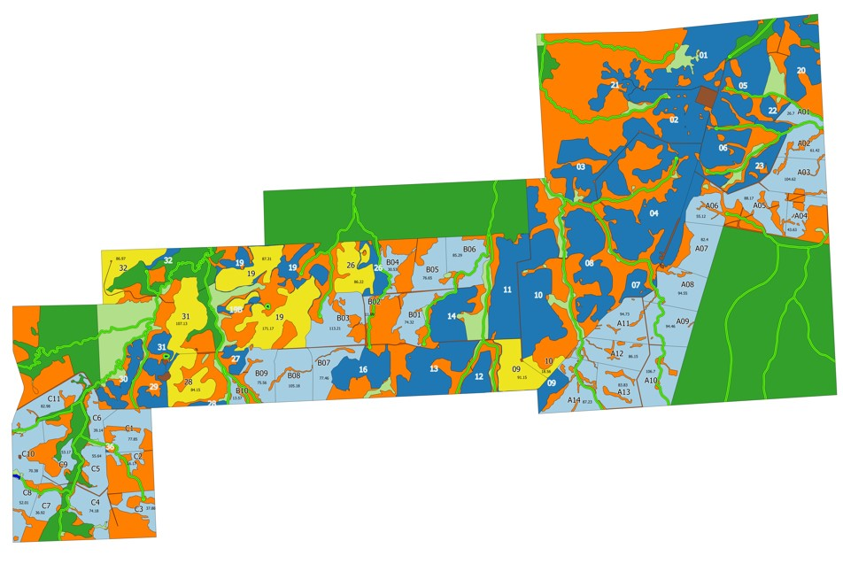
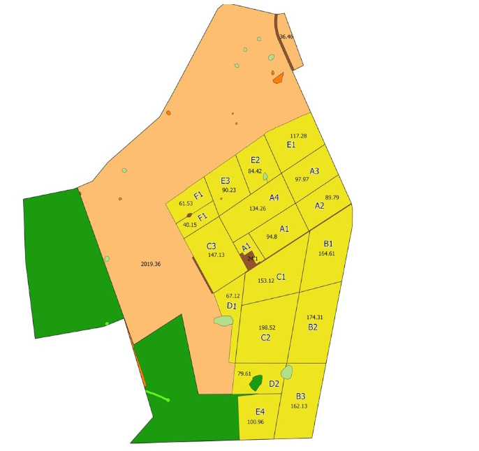
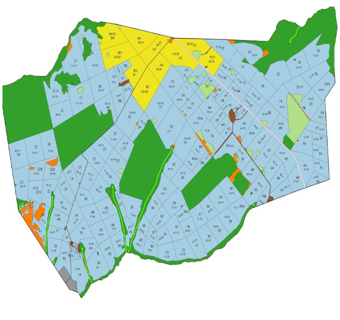
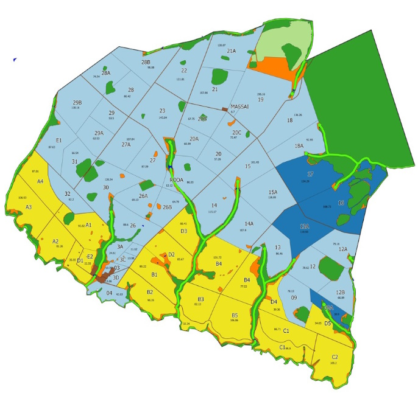

Mapas
de Uso
Link mapas das fazendas
Mapa
Vista da fazenda Guarabu,dezembro de 2022
fazendas - Links para os mapas de uso
Fazenda Alvorada
Fazenda Flores

Fazenda San Antonio
Fazenda San Diego
Fazenda Colorado
Fazenda Kuluene
Fazenda San Jorge

Fazenda San José I

Fazenda Talismã
Fazenda San José II

Fazenda Guarabu
Fazenda Sublime
Mapa Unidades Bartira
Selecione uma Unidade
Nome Extenso
:
Latitude
:
Longitude
:
Fonte
: